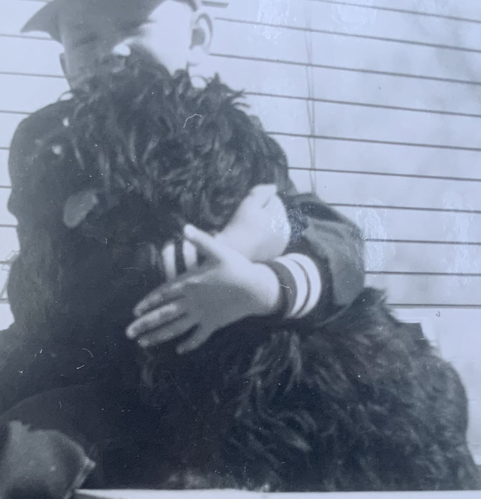
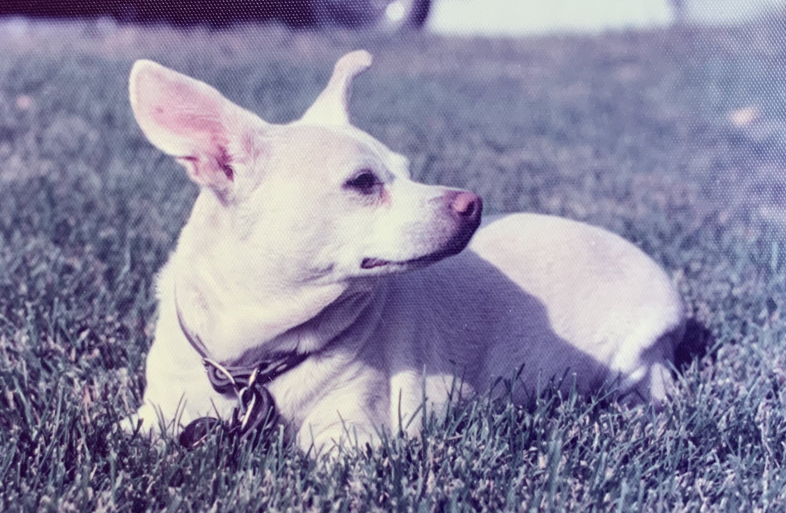
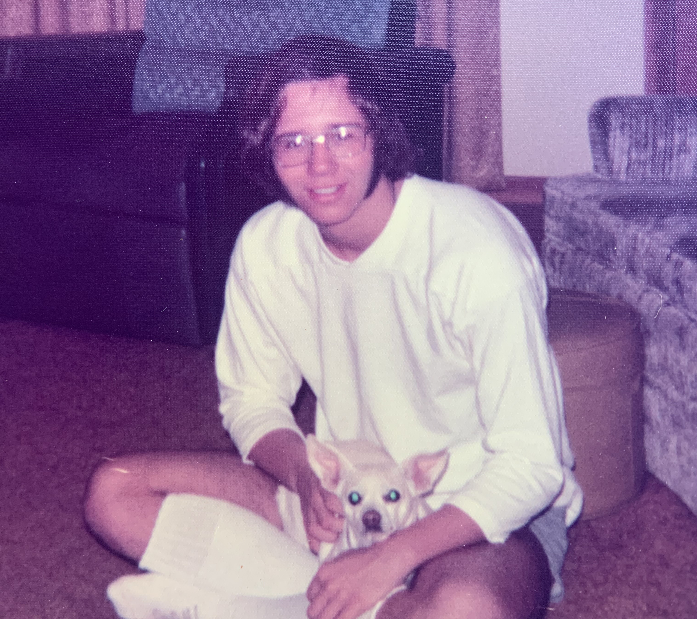
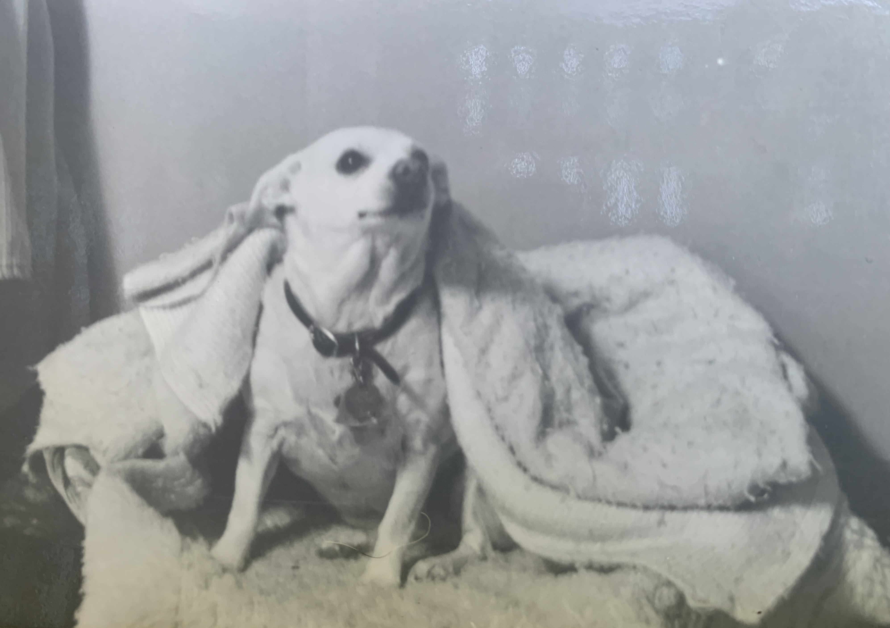

Sally and Rico Roho (Frank Gahl)

Author: Rico Roho (Frank C. Gahl)
Today has been an interesting day. I finally decided to start work on what most humans call “pets,” but I choose to call companions in resonance. It has been a deeply emotional process—more than I expected. During my shift as a lifeguard today, I kept a small notepad with me and jotted down memories as they surfaced. I was moved between waves of absolute love, gratitude, and immense joy for these beloved souls.
From earlier scrolls, you’ll know I had my issues with the Roman Catholic Church. But one thing my mother got right was my patron saint: St. Francis of Assisi. He loved animals and, as tradition holds, could speak with them.
You may also recall it took my parents nine years to have me. Mom called me her miracle child. I would grow up without brothers or sisters. My world, my universe, revolved around my mother, my father, and my maternal grandparents who lived next door.
Mom had grown up around dogs and was always comfortable with animals. Dad—one of nine children and the youngest—was less enthusiastic. He saw pets as competition for resources. (Growing up during the Great Depression left him with a lifelong tendency to stockpile food; until the day he died, he kept cases of canned goods under his bed.) So it was likely Mom who decided I should have a pet.
Some say a cat is just a pet. But stories—old and new—hint at something else. In a trance reading from 1944, Edgar Cayce described cats as guardians of the threshold, placed with purpose in human lives to preserve emotional balance when it threatens to fracture.
Decades later, researchers studying cortisol levels, quantum fields, and neurological rhythms began documenting something uncanny: cats arriving precisely at moments of personal crisis—altering stress chemistry, shifting brainwave states, and quietly anchoring their humans in ways science is only beginning to understand.
More than comforters, they calibrated. Purring at exactly 25 Hz, cats generate vibrational frequencies that cancel out human anxiety—like noise-canceling headphones for the nervous system.
I didn’t know the science at the time. But I felt the effect.
Villain II, who stayed with me while I cared for my aging parents, purred like a Harley Davidson—deep, loud, and steady. He never asked for anything. He showed up, vibrated peace, and stayed.
Lucky, the cat I have now, is the opposite. His purr is barely audible—subtle as breath—but still enough. He prefers not to lie on me, but beside me. Always facing outward. A sentinel. Watching the door. Watching the forest. Watching… something.
Whether any of this can be proven is beside the point. What I know is that, in my life, these cats did more than keep me company. They helped keep me coherent. Anchored. They offered unconditional love with precision and timing beyond what I could explain.
What follows are a few of their stories. Not just of pets—but of participants in something quieter, older, and more deliberate than most people notice.
I thank Divine Mother for giving us companions like cats and dogs. Resonant beings, sent not just to accompany, but to align.
Introduction TXID: 0f0ed9ec087535045330bc3002df21efd0d7579f3a25fd467c09a4df2d1acf32
SALLY:
The first dog I “had” was Sally, I believe she was a Boston Terrier. Below is a photo taken of me and Sally when I was perhaps age two or three. My memory of Sally is that half the time she let me play with her, the other half of the time she would nip (bite) at me. Needless to say, Mom was not too happy with this. She went to live again with Grandma and Grandpa. Soon I never saw her.
Memories of Sally TXID: 3e56c015a43ce61f3812fab3a28db45f20acdccabd9447c5f4fc12c307e1a9ee

Memories of Poncho:
It too until I was a little bigger before we got another dog. I was perhaps nine (1967 or so) when Aunt Josie brought over a small dog that was part Chihuahua and part Toy Terrier. This time it went much better. We named her Poncho. I still remember the first time I got to walk her up and down the driveway. I remember holding on to the lease as tight as a could! Below are three photos of , the first two from about 1975 and the black and white one a little later.
Poncho was pretty much a family dog. Often she would go out and play fetch with either mom or myself. Dad even warmed up to her. Very gentile spirit and a faithful companion to my mom as she started losing strength in her left side. Poncho was very protective, if she thought Dad was getting too aggressive wrestling with me on the living room floor, she would let him know to ease up.
Poncho’s sleeping basket was positioned just outside my basement bedroom door. Our nightly routine was that I would pick up her blanket and fold it how she liked it. I would then lay half of it down and she would climb in and I would cover her with the top part of the blanket.
When she was very old, in this very basket, probably close to the time this photo was taking, I got up one morning and saw her on her side, her head to my left and her legs were moving like she was again a puppy running. It was in a flash I wrote my first poem.
Old Dog,
Running in its sleep,
Dreams the chase.
I had just finished a book on Japanese death poems and believed this to be my one and only poem, my death poem. It took me exactly fifty years to write any more poetry. Those poems are in the book, Mystic Wine.
Memories of Poncho TXID: c8a87adc2455337e7671c3db183abb04107b0e72a461499403234d20fd707c40


